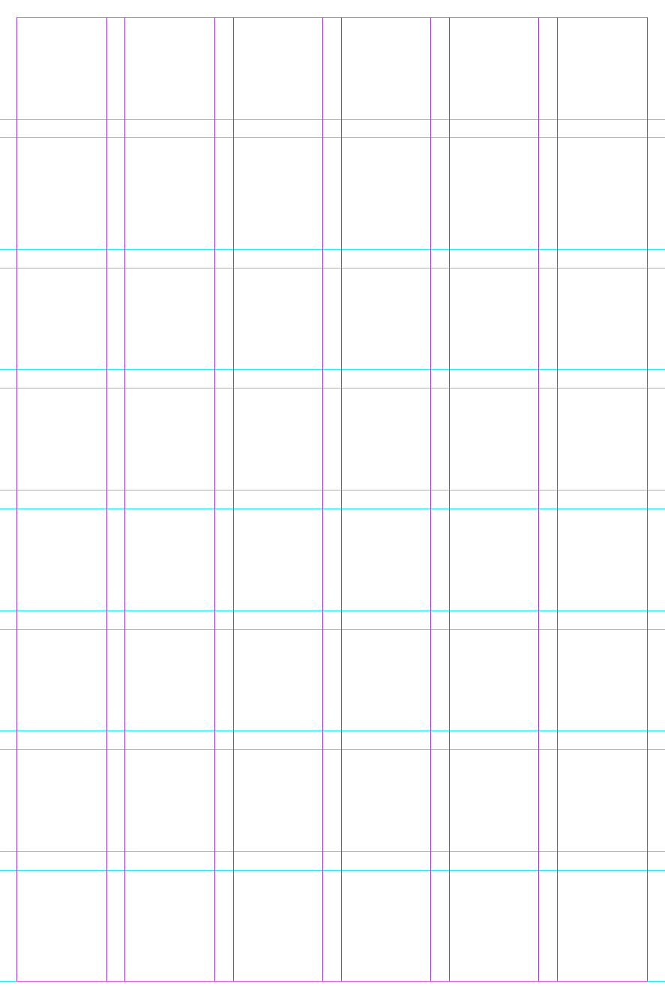
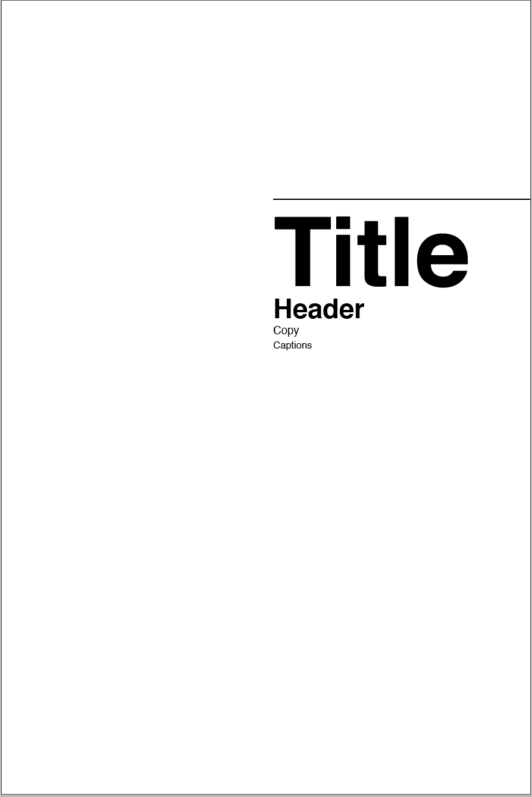
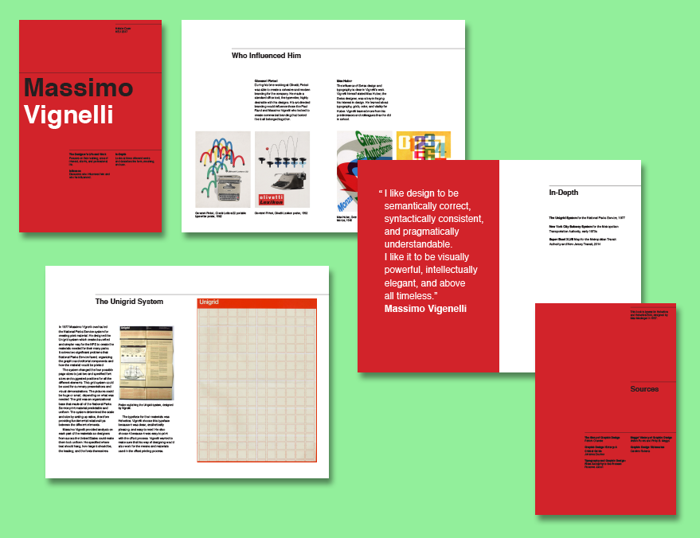

As part of our final project for History of Graphic Design, we were tasked with researching, designing, and assembling an accordian on a designer. I was lucky and received Massimo Vignelli, the man who redesigned the New York subway system and left a lasting impact on design in the United States. After reading as much I could and writing the content, the next step was to develop the accordian. Vignelli believed in a strong grid and type hierarchy, those were the areas where I decided to focus first. Choosing to set the type Helvetica was the easiest choice, it was one of his favorite typefaces!


From there, I looked back at Vignelli's work. Vignelli's designs for the Graphic Design for Non-Profit Organization and New York City Transit Authority Graphics Standards Manual definitely inspired me. With my grid, laying out the text and images was not difficult. I added quote pagebreaks in order to give the reader a visual break.
